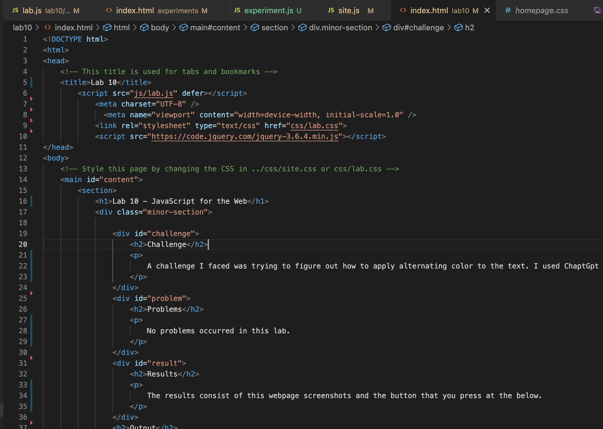
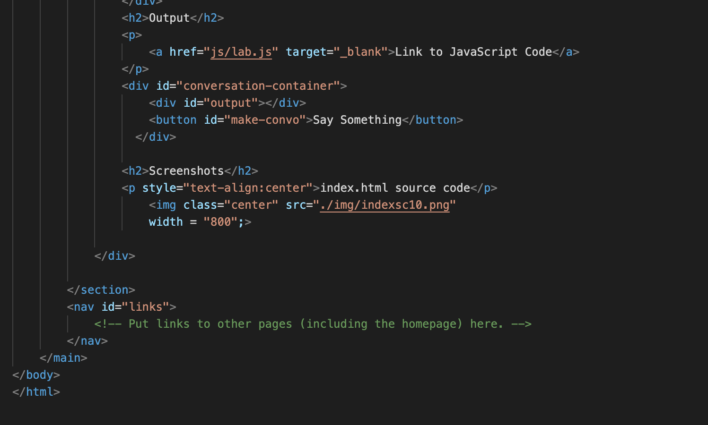
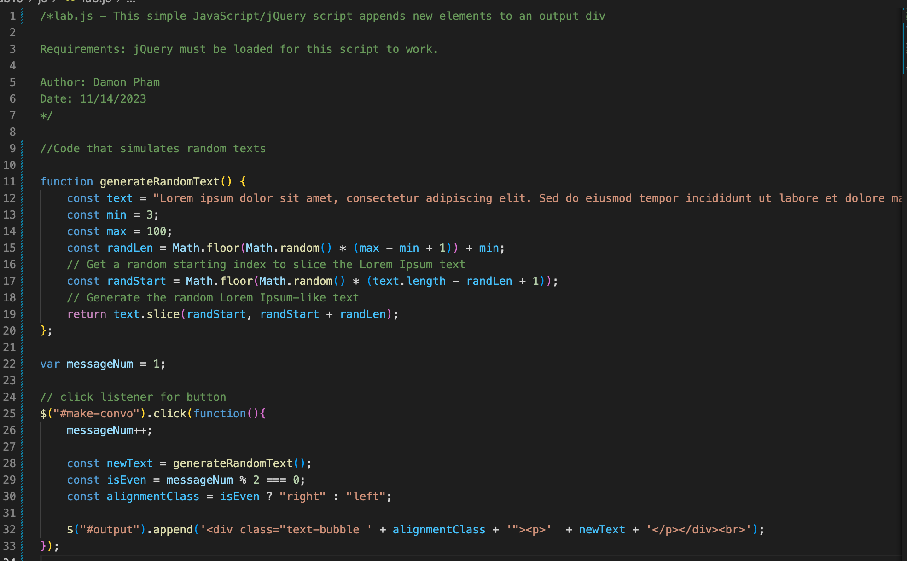
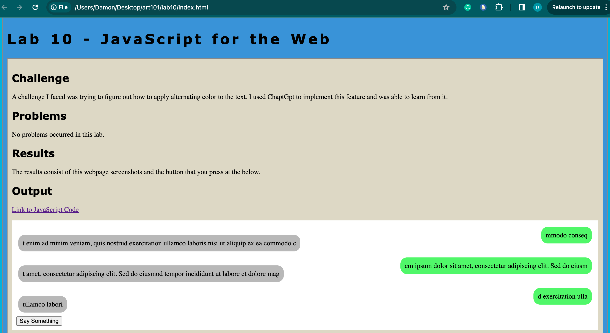
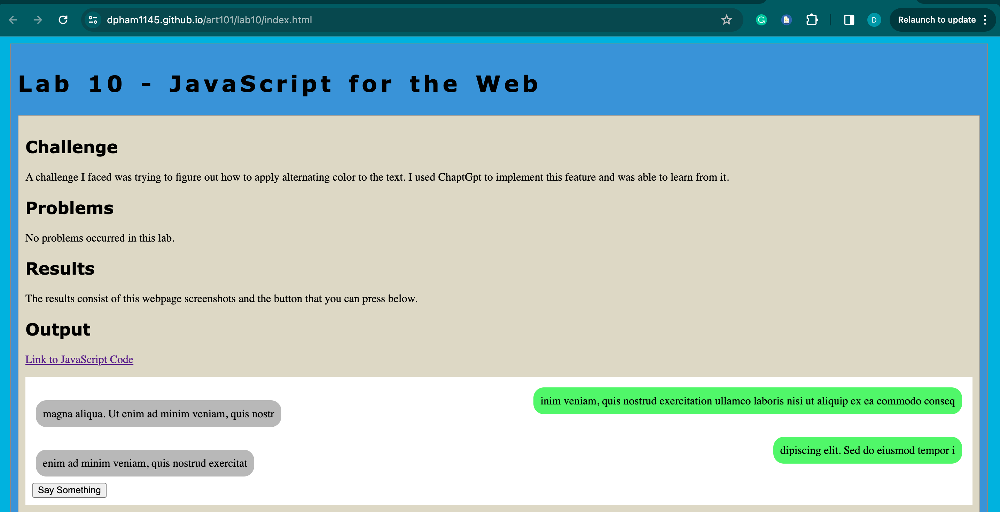
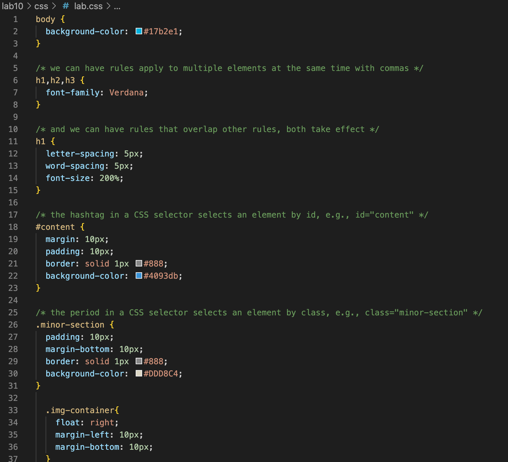
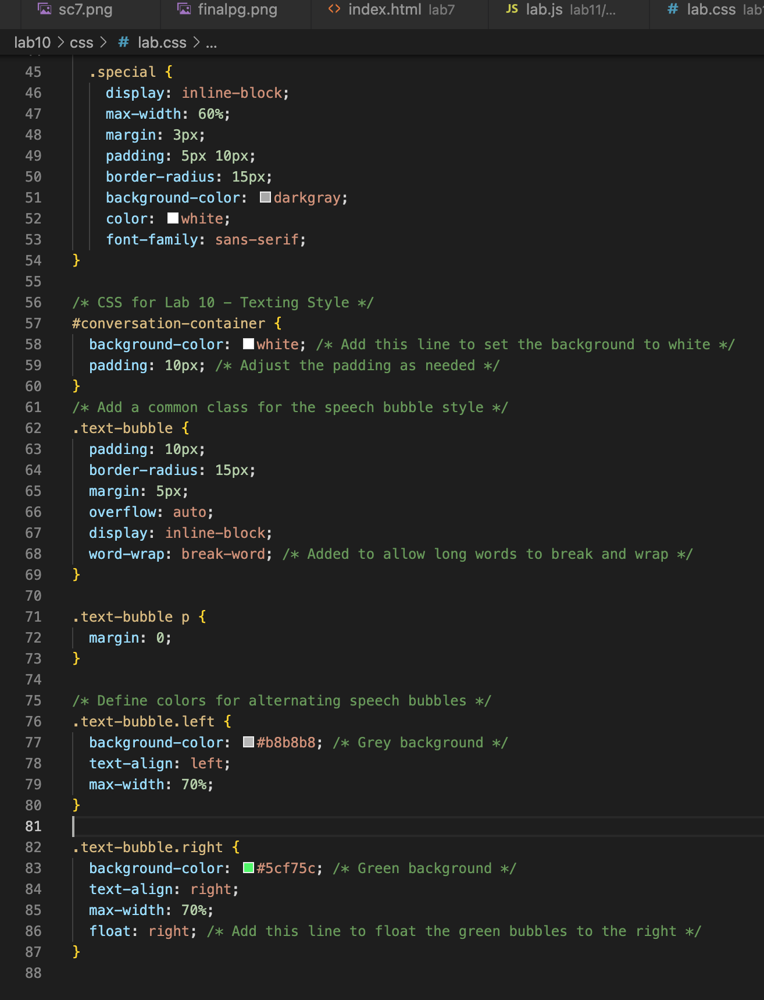

Lab 10 - JavaScript for the Web
Challenge
A challenge I faced was trying to figure out how to apply alternating color to the text. I used ChaptGpt to implement this feature and was able to learn from it.
Problems
No problems occurred in this lab.
Results
The results consist of this webpage screenshots and the button that you can press below.
Output
Screenshots
index.html source code part 1
index.html source code part 2
index.html source code JavaScript source code
Page working locally
Page working on the server
CSS file part 1
CSS file part 2
